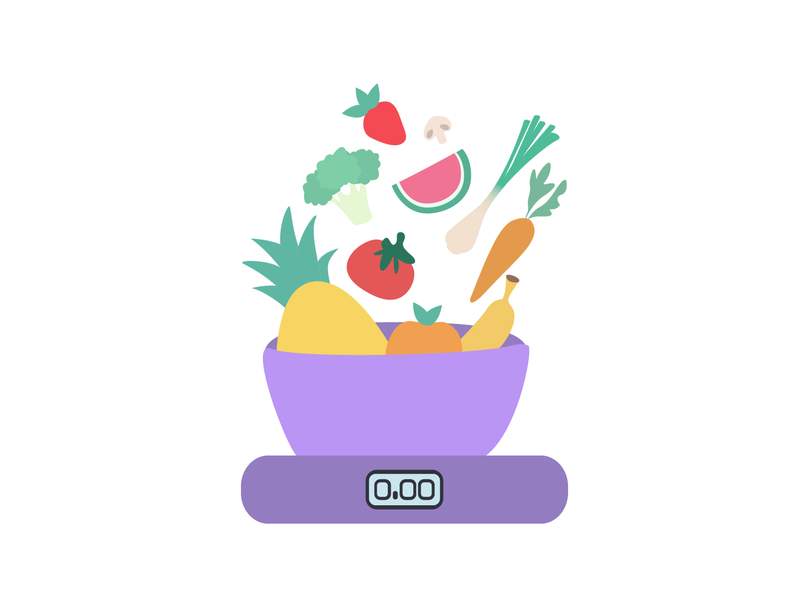

Site sur la micro-nutrition
Site créé dans le cadre de mon stage chez Pépé Studio.

J'ai réalisé le design de ce site pour une cliente
qui se lance en tant que praticienne dans la Neuro-Nutrition®.


J'ai réalisé des illustrations pour montrer les différentes offres.
Chaque illustration a été faite avec Illustrator et reste cohérente avec l'offre complète.

J'ai également réalisé des icônes afin d'illustrer la section information.
Les couleurs s'intègre avec celles du site. Il est bon de noter que je n'ai pas réalisé l'icone SIIN qui est le logo de l'institution qui a formé la cliente.